Episodes
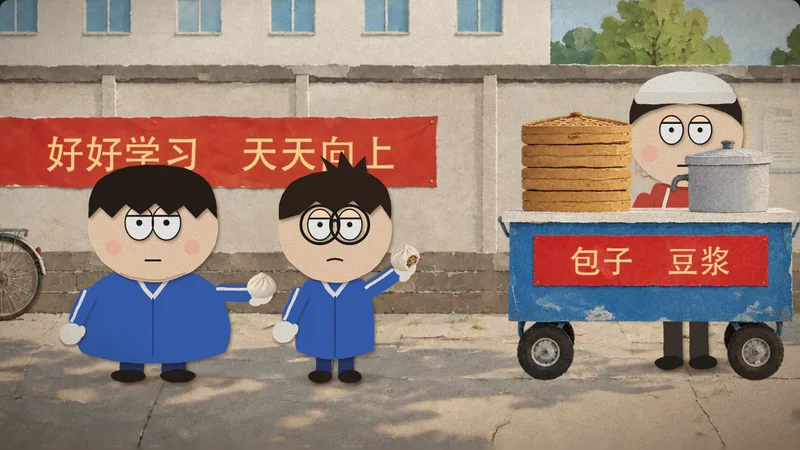
Episode 1 · 2 minutesBreakfast in the BathroomSeventh grade. My deskmate had two questions for me, and one morning he asked them both at once. A true story.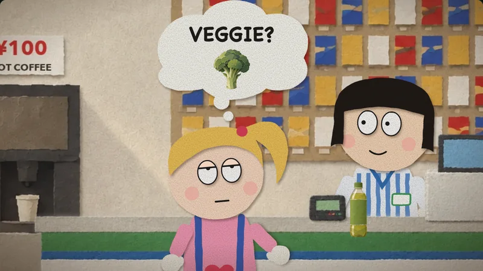
Episode 2 · 2 minutesDo You Need a Bag?A convenience store in Fukuoka. A clerk who speaks no English, a customer who speaks no Japanese, and me in line behind them with a hundred-yen coffee. Also true.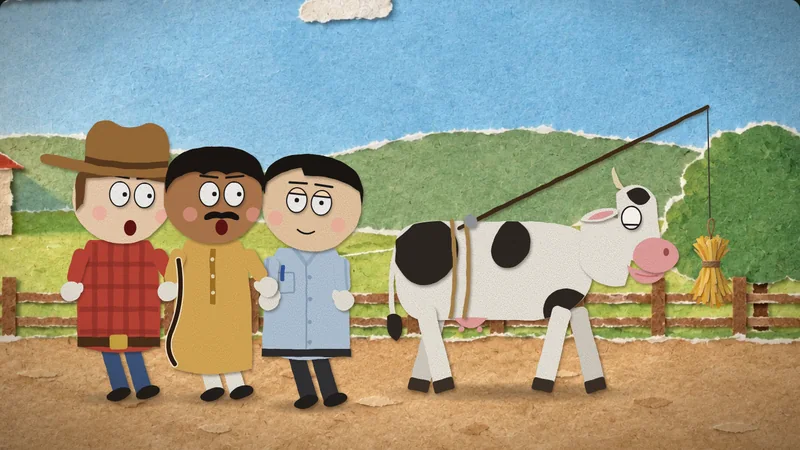
Episode 3 · 2 minutesHow to Move a CowA Chinese man, an Indian man and an American are stuck behind a cow that won’t budge. Each has his own way to make it walk. An old joke, with a newer ending.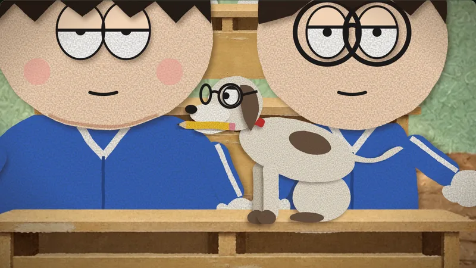
Episode 4 · 2 minutesThe Dog Ate My HomeworkMy deskmate Bo never did his homework, but he always had an excuse. Then he rented a dog to prove one. I did my homework every morning, at breakfast.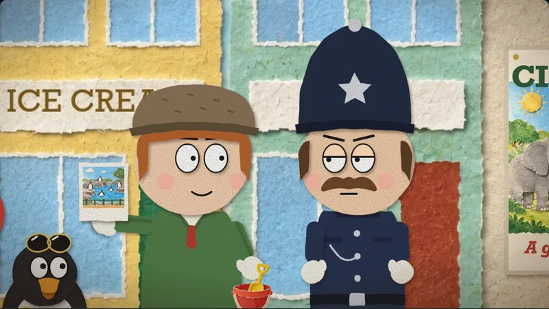
Episode 5 · 2 minutesThe Penguin and the ZooA man buys a fish at the harbour, and a penguin follows it. A policeman tells him to take it to the zoo. The next day, there they are again.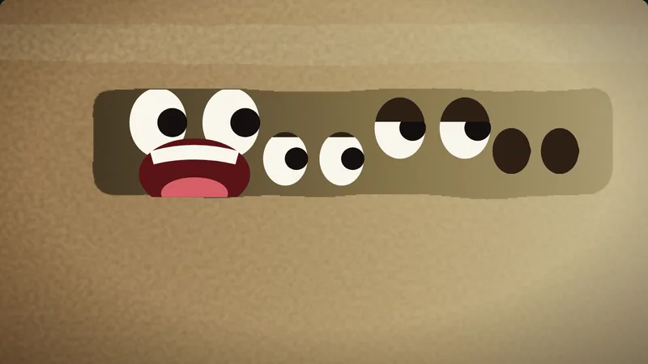
Episode 6 · 2 minutesFour DogsAn American dog, a Polish dog and a Soviet dog meet in an alley behind a kitchen to compare notes on a dog’s life. Somebody in a box has been listening.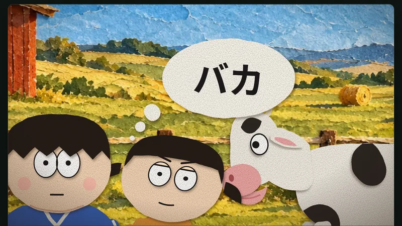
Episode 7 · 2 minutesBaka Means CowMy cousin Yui visits her uncle Pedro’s farm in southern Spain, and Spain’s everyday word for a cow sounds, to Osaka-school ears, like the last thing you may call your aunt. Nobody insults anybody. It just sounds that way.
More jokes coming.
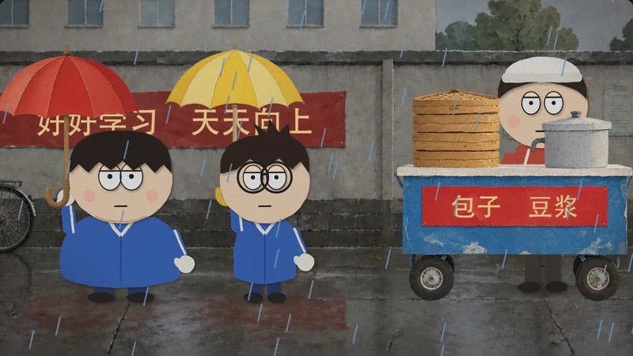
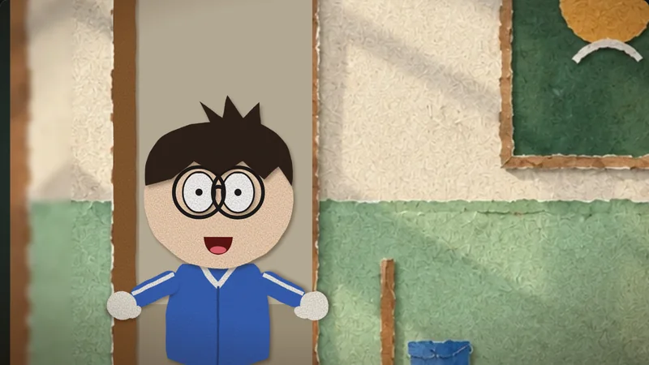
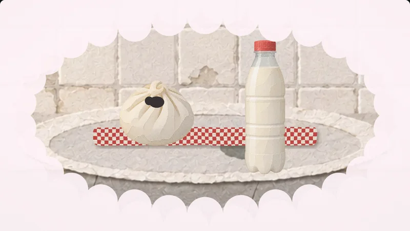
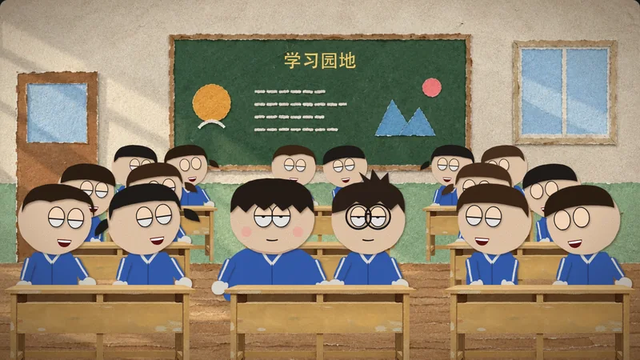
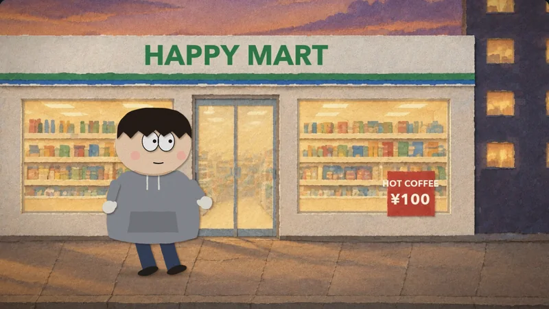
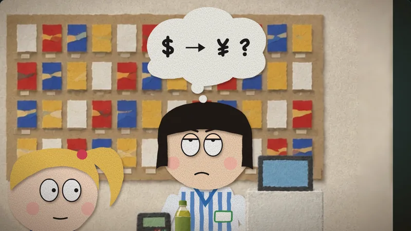
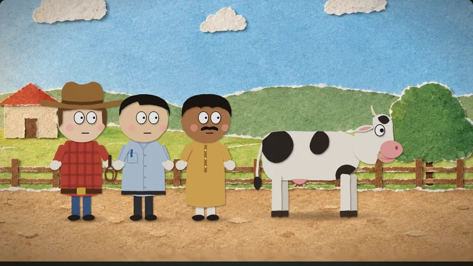
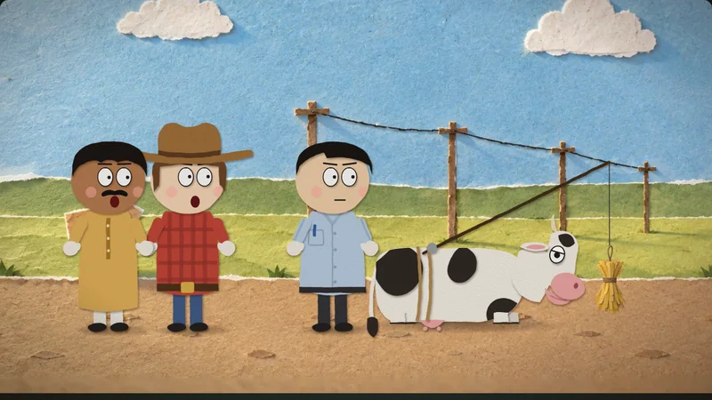
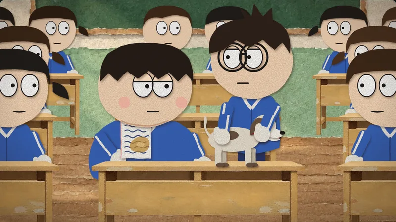
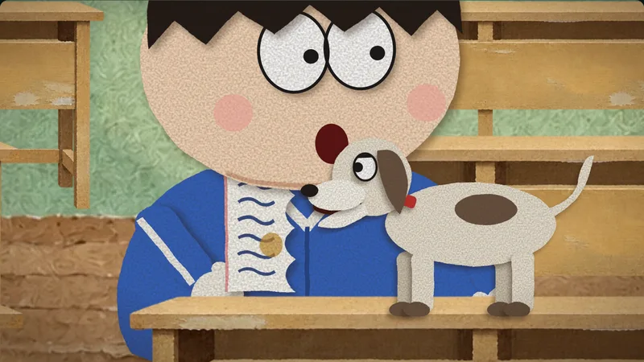
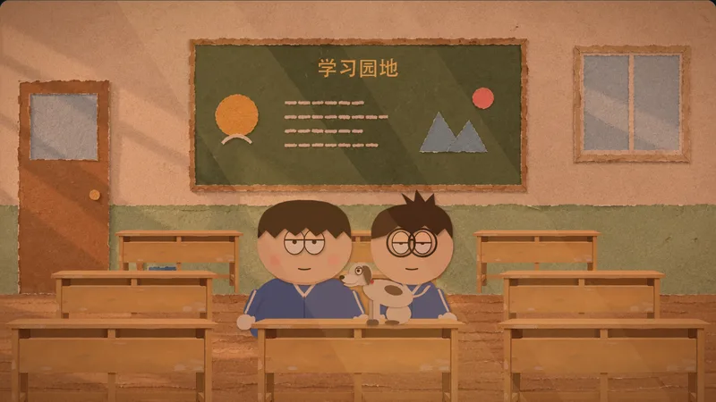
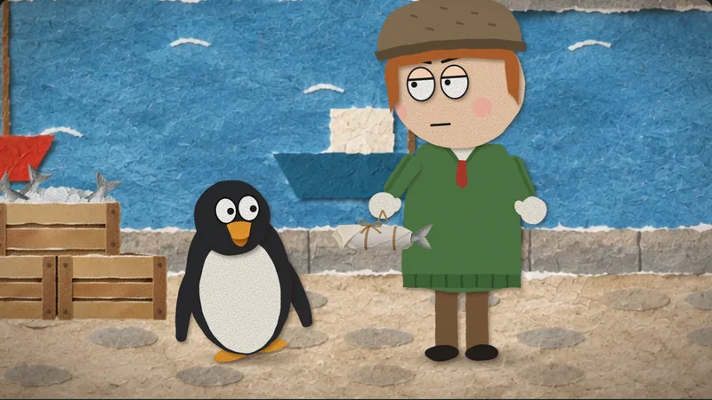
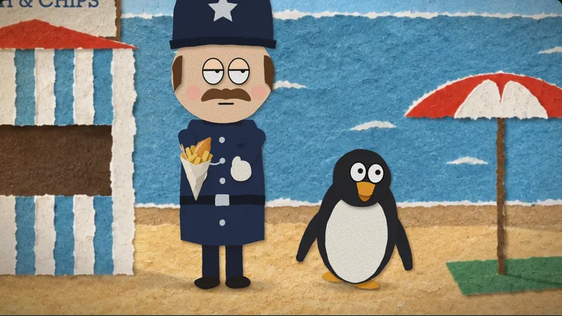
Two ways, then a third
The Three Little Pigs was painted by an image model, characters included. The world looked lovely, but every new action meant another round of drawings, and keeping a character the same from shot to shot was a fight. Little Red Riding Hood went the other way: everything was paper drawn in code. Any movement was a few lines, but the world looked plain.
So we split the work by one question: does it move? Anything that stays put (streets, walls, blackboards, desks, the bun cart) is painted by the image model. Anything with joints, a face or a change of shape (the people, the falling rain, a bitten bun, the hands of the clock) is a paper puppet moved by code. A painting never has to act, and a puppet never has to look like a painting.
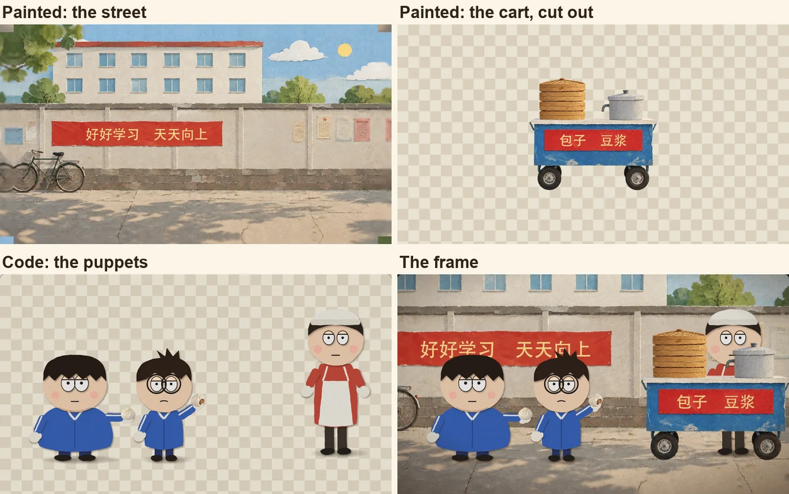
Finding the look
Our puppets are flat paper with round heads, in the spirit of South Park. We tried three painted styles behind them: flat paper like the puppets (closest to that show), a warm gouache, and a richer torn-paper collage. We picked the collage. There was no reason to copy South Park exactly, and the point was to let the image model give the world as much texture and light as it could.
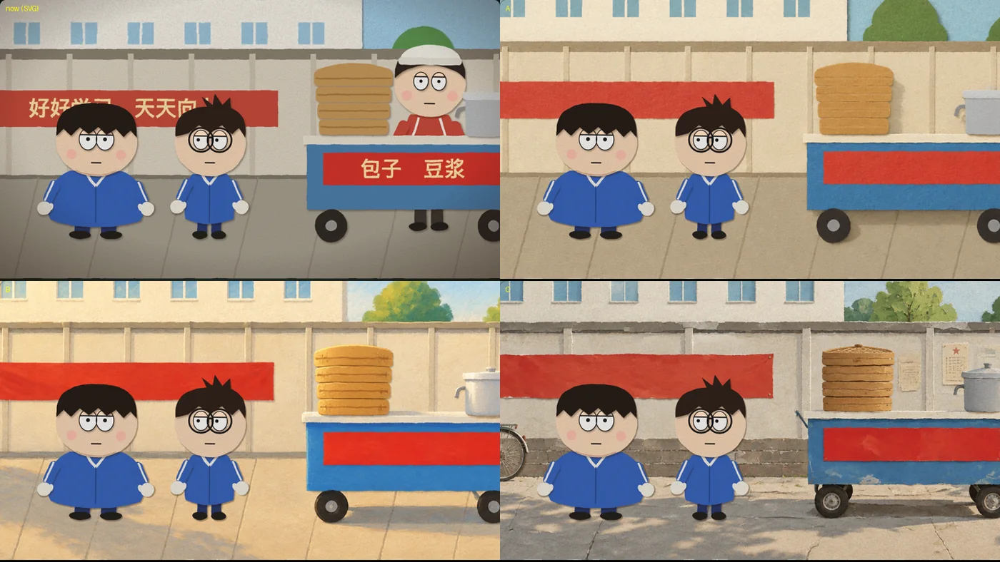
Every set was painted by redrawing our own code-drawn version in that style. That way the composition stays the same, and the puppets still stand where the scenes expect them. Signs and blackboards were painted blank, and their words were written on afterwards: image models still garble Chinese characters.
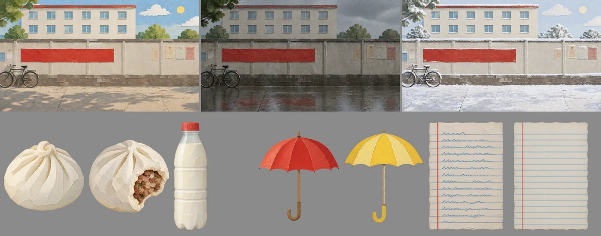
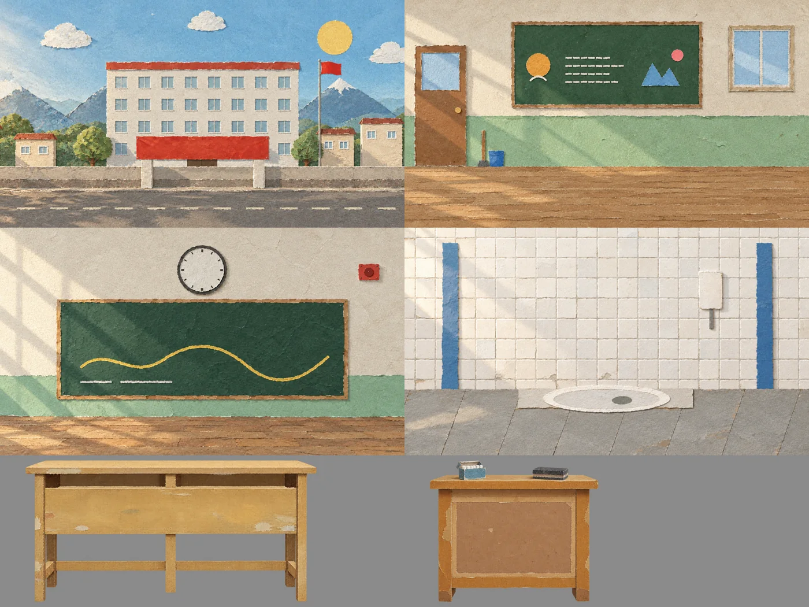
What the code still does
- The acting. Mouths timed to every word, blinks at each puppet's own moments, eyes that follow whoever is talking, a whole class turning its heads a frame or two apart.
- The joke's machinery. Two thought bubbles (a bun and a toilet) pushing each other and merging, before Bo opens his mouth.
- Weather and small things. Rain and snow falling over the painted street, umbrellas, a fly, the clock's hands.
- The film. Cuts, close-ups, a soft background in close-ups, a soft shadow under every puppet so it stands in the painted light, and a gentle hand-made wobble.
A joke needs its setup
The first version didn't land. Bo's slip ("Wanna go eat breakfast… in the bathroom?") came out of nowhere, and he looked as if he really meant it. The fix was story, not animation. First we show his two everyday questions: "Breakfast?" every morning at the stall, "Bathroom?" after every class. Then, the one morning he oversleeps and comes in starving, we show both wants at once, as two bubbles that collide. Only then does he speak. Same lesson as Little Red Riding Hood: set up everything the punchline needs, before anyone animates a frame.
Episode 2, made in one night
For the second joke, the user told the story at bedtime and handed over: a fresh session read this method, wrote the script, painted two sets (the store outside and in), a counter to stand behind and three props, built three new puppets and four scenes, and checked them, all before morning. The clerk's Japanese is spoken in Japanese with English subtitles, so the audience understands both sides while neither character does. Its painting cost $0.13.
Episode 3, made with the Skill
The third joke was the test of the Papermorph Skill itself. A new session started from nothing but the Skill and the joke, asked a few questions (which language each man speaks, whether English viewers need "lying flat" explained), wrote the script, painted two country roads and a bundle of hay, built a cow and three new puppets, and checked its own work. Each man speaks his own language, Mandarin, Hindi and English, with English subtitles. Its painting cost $0.07.
Episode 4, filmed twice
The fourth joke was cut right after the first one, then shelved: the story worked, the filming didn't. Every object the jokes hang on (an oil drop, a blank sheet, three bites) was a few pixels in a wide shot, and the main gag played in one locked frame. A review compared it shot by shot with the episodes above, and four agents filmed each scene again: the main scene went from 6 shots to 22, with a close-up for every object a joke needs and a reaction for every joke. Same script, same voices, no new paintings.
Episode 5, nobody in the loop
For the fifth, the user said only: make one, without me. Claude picked an old joke, and a coordinator ran the rest with agents: one wrote the script and built the harbour, the street, the beach and three new puppets; four filmed a scene each; then a director, two picture reviewers and a sound reviewer watched every scene against the episodes above and sent them back, three rounds in all. The running gag (he stops, the penguin stops half a step late) came out of the first review. Its painting cost $0.18.
For the sixth, the user brought the joke Ronald Reagan used to tell about three dogs, and added a fourth. They changed the last line so it rhymes ("Shh. Don't bark, or you are the meat."), asked for it all in English, and after watching the first cut said the Polish dog shouldn't carry his bowl and the barks sounded odd, so the dogs now shout their own "Woof!". The miscount became the opening gag, and a cook's shadow chopping behind a kitchen door became the reason nobody barks. The same team of agents ran three review rounds. Its painting cost $0.14.
The seventh came from outside: Yuya made it with the same Skill and sent it in as a pull request. Spain’s everyday word for a cow, “vaca”, sounds to Yui like “baka”; three new painted sets (a farm gate, a pasture and a stable), and the letters on the stable board drawn in code over a blank painted board, so a typo never costs a repaint. Two more rounds of review fixes came in on the pull request before it went on the shelf.
The numbers
Why we're keeping this one. The paintings carry the look, the puppets carry the acting, and neither has to do the other's job. The sets and props carry over to the next joke. This is the method we're building the Papermorph Skill's picture books on.